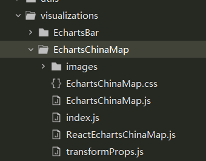
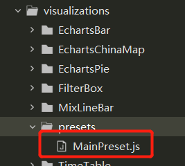

# 操作系统
# 软件依赖
^ Lastest ~ minimum
- Python3.6~
- Pip~
- node.js~
# 实验环境
- Windows10
- python 3.68
- pip 19.2.3
- setuptools 41.4.0
- nodejs 12.15.0
- npm 6.134
- superset 0.35
# 前端开发
- 在 visualizations 文件夹下创建 EchartsMapChina 文件夹
 - 在 images 文件夹里面放入图表的缩略图，可以自己去 echarts 官网截图然后放进去，名字不能更改
- 创建 index.js
import { t } from '@superset-ui/translation'; | |
import { ChartMetadata, ChartPlugin } from '@superset-ui/chart'; | |
import transformProps from './transformProps'; | |
import thumbnail from './images/thumbnail.png'; | |
const metadata = new ChartMetadata({ | |
name: t('Echart China Map'), | |
description: '', | |
credits: ['http://echarts.baidu.com/examples/editor.html?c=scatter-effect'], | |
thumbnail, | |
}); | |
export default class TimeSeriesScatterChartPlugin extends ChartPlugin { | |
constructor() { | |
super({ | |
metadata, | |
transformProps, | |
loadChart: () => import('./ReactEchartsChinaMap.js'), | |
}); | |
} | |
} |
- transformProps.js
export default function transformProps(chartProps) { | |
const { width, height, queryData, formData } = chartProps; | |
//console.log (chartProps); 可以用来验证数据是否正确 | |
return { | |
data: queryData, | |
width, | |
height, | |
formData, | |
toolTip: queryData.data.toolTip, | |
series: queryData.data.data, | |
maxMetrics: queryData.data.max, | |
}; | |
} |
- 创建 ReactEchartsChinaMap.js
import { reactify } from '@superset-ui/chart'; | |
import Component from './EchartsChinaMap'; | |
export default reactify(Component); |
- 创建 EchartsChinaMap.js
注释内容是一些额外的样式，可以去掉也可以打开
import d3 from 'd3'; | |
import PropTypes from 'prop-types'; | |
import { CategoricalColorNamespace } from '@superset-ui/color'; | |
import { getNumberFormatter } from '@superset-ui/number-format'; | |
import './EchartsChinaMap.css'; | |
import echarts from 'echarts'; | |
import china from 'echarts/map/json/china.json' | |
const propTypes = { | |
data: PropTypes.array, | |
width: PropTypes.number, | |
height: PropTypes.number, | |
}; | |
function EchartsChinaMap(element, props) { | |
const { | |
width, | |
height, | |
data, | |
formData, | |
series, | |
toolTip, | |
maxMetrics, | |
} = props; | |
// var mapData = [ | |
// {name:"北京",value:1199}, | |
// {name:"天津",value:42}, | |
// {name:"河北",value:102}, | |
// {name:"山西",value:81}, | |
// {name:"内蒙古",value:47}, | |
// {name:"辽宁",value:67}, | |
// {name:"吉林",value:82}, | |
// {name:"黑龙江",value:123}, | |
// {name:"上海",value:24}, | |
// {name:"江苏",value:92}, | |
// {name:"浙江",value:114}, | |
// {name:"安徽",value:109}, | |
// {name:"福建",value:116}, | |
// {name:"江西",value:91}, | |
// {name:"山东",value:119}, | |
// {name:"河南",value:137}, | |
// {name:"湖北",value:116}, | |
// {name:"湖南",value:114}, | |
// {name:"重庆",value:91}, | |
// {name:"四川",value:125}, | |
// {name:"贵州",value:62}, | |
// {name:"云南",value:83}, | |
// {name:"西藏",value:9}, | |
// {name:"陕西",value:80}, | |
// {name:"甘肃",value:56}, | |
// {name:"青海",value:10}, | |
// {name:"宁夏",value:18}, | |
// {name:"新疆",value:180}, | |
// {name:"广东",value:123}, | |
// {name:"广西",value:59}, | |
// {name:"海南",value:14}, | |
// ]; | |
// var toolTipData = [ | |
// {name:"北京",value:[{name:"科技人才总数",value:95},{name:"理科",value:82}]}, | |
// {name:"天津",value:[{name:"文科",value:22},{name:"理科",value:20}]}, | |
// {name:"河北",value:[{name:"文科",value:60},{name:"理科",value:42}]}, | |
// {name:"山西",value:[{name:"文科",value:40},{name:"理科",value:41}]}, | |
// {name:"内蒙古",value:[{name:"文科",value:23},{name:"理科",value:24}]}, | |
// {name:"辽宁",value:[{name:"文科",value:39},{name:"理科",value:28}]}, | |
// {name:"吉林",value:[{name:"文科",value:41},{name:"理科",value:41}]}, | |
// {name:"黑龙江",value:[{name:"文科",value:35},{name:"理科",value:31}]}, | |
// {name:"上海",value:[{name:"文科",value:12},{name:"理科",value:12}]}, | |
// {name:"江苏",value:[{name:"文科",value:47},{name:"理科",value:45}]}, | |
// {name:"浙江",value:[{name:"文科",value:57},{name:"理科",value:57}]}, | |
// {name:"安徽",value:[{name:"文科",value:57},{name:"理科",value:52}]}, | |
// {name:"福建",value:[{name:"文科",value:59},{name:"理科",value:57}]}, | |
// {name:"江西",value:[{name:"文科",value:49},{name:"理科",value:42}]}, | |
// {name:"山东",value:[{name:"文科",value:67},{name:"理科",value:52}]}, | |
// {name:"河南",value:[{name:"文科",value:69},{name:"理科",value:68}]}, | |
// {name:"湖北",value:[{name:"文科",value:60},{name:"理科",value:56}]}, | |
// {name:"湖南",value:[{name:"文科",value:62},{name:"理科",value:52}]}, | |
// {name:"重庆",value:[{name:"文科",value:47},{name:"理科",value:44}]}, | |
// {name:"四川",value:[{name:"文科",value:65},{name:"理科",value:60}]}, | |
// {name:"贵州",value:[{name:"文科",value:32},{name:"理科",value:30}]}, | |
// {name:"云南",value:[{name:"文科",value:42},{name:"理科",value:41}]}, | |
// {name:"西藏",value:[{name:"文科",value:5},{name:"理科",value:4}]}, | |
// {name:"陕西",value:[{name:"文科",value:38},{name:"理科",value:42}]}, | |
// {name:"甘肃",value:[{name:"文科",value:28},{name:"理科",value:28}]}, | |
// {name:"青海",value:[{name:"文科",value:5},{name:"理科",value:5}]}, | |
// {name:"宁夏",value:[{name:"文科",value:10},{name:"理科",value:8}]}, | |
// {name:"新疆",value:[{name:"文科",value:36},{name:"理科",value:31}]}, | |
// {name:"广东",value:[{name:"文科",value:63},{name:"理科",value:60}]}, | |
// {name:"广西",value:[{name:"文科",value:29},{name:"理科",value:30}]}, | |
// {name:"海南",value:[{name:"文科",value:8},{name:"理科",value:6}]}, | |
// {name:"青海",value:[{name:"文科",value:8},{name:"理科",value:6}]}, | |
// ]; | |
element.innerHTML = ''; | |
const div = d3.select(element, props); | |
var html = '<div id="myChart" style="height:' + height + 'px; width:' + width + 'px;"></div>'; | |
div.html(html); // 给 echarts 添加 div | |
var myChart = echarts.init(document.getElementById('myChart')); // 初始化 echarts | |
echarts.registerMap('china',china); | |
var mapName = 'china' | |
var geoCoordMap = {}; | |
const fd = formData | |
// 为了适配颜色 | |
const colorList = { | |
DEFAULT : ['#15a8fe', 'rgba(21,168,254,0.31)','#FFFF00'], | |
SUPERSET_DEFAULT:["#f6efa6", "#d88273","#bf444c","#15a8fe"] | |
}; | |
var colors = [] | |
if (fd.echartsColorScheme) { | |
colors = colorList[fd.echartsColorScheme] | |
}else{ | |
colors = colorList["DEFAULT"] | |
} | |
/* 获取地图数据 */ | |
myChart.showLoading(); | |
var mapFeatures = echarts.getMap(mapName).geoJson.features; | |
myChart.hideLoading(); | |
mapFeatures.forEach(function(v) { | |
// 地区名称 | |
var name = v.properties.name; | |
// 地区经纬度 | |
geoCoordMap[name] = v.properties.cp; | |
}); | |
var max = 480, | |
min = 9; // todo | |
var maxSize4Pin = 100, | |
minSize4Pin = 20; | |
var convertData = function(data) { | |
var res = []; | |
for (var i = 0; i < data.length; i++) { | |
var geoCoord = geoCoordMap[data[i].name]; | |
if (geoCoord) { | |
res.push({ | |
name: data[i].name, | |
value: geoCoord.concat(data[i].value), | |
}); | |
} | |
} | |
return res; | |
}; | |
var visualMap = null | |
if(fd.echartsChinaVisualMap){ | |
visualMap = { | |
show: true, | |
min: 0, | |
max: maxMetrics, | |
left: '10%', | |
top: 'bottom', | |
calculable: true, | |
seriesIndex: [1], | |
inRange: { | |
color:colors.slice(0,colors.length-1) | |
} | |
} | |
} | |
var option = { | |
tooltip: { | |
padding: 0, | |
// enterable: true, | |
// transitionDuration: 1, | |
// textStyle: { | |
// color: '#000', | |
// decoration: 'none', | |
// }, | |
// position: function (point, params, dom, rect, size) { | |
// return [point[0], point[1]]; | |
// }, | |
formatter: function(params) { | |
var total = 0 | |
if(params.seriesType!="map" || params.seriesType=="effectScatter"){ | |
total = params.value[params.value.length-1] | |
}else{ | |
total = params.value | |
} | |
if (isNaN(total)){ | |
total = 0 | |
} | |
// var tooltipHtml = '<p style="color:#fff;font-size:12px;">'+'<i style="display:inline-block;width:10px;height:10px;background:#0abdea;border-radius:40px;margin:0 8px">'+'</i>' | |
// +' 总数：'+'<span style="color:#0abdea;margin:0 6px;">'+total+'</span>'+' 个 '+'</p>' | |
var tooltipHtml = '' | |
if (!toolTip[params.name]){ | |
return tipHtml = '<div style="width:280px;height:180px;background:rgba(22,80,158,0.8);border:1px solid rgba(7,166,255,0.7)">' | |
+'<div style="width:100%;height:40px;line-height:40px;border-bottom:2px solid rgba(7,166,255,0.7);padding:0 20px">'+'<i style="display:inline-block;width:8px;height:8px;background:#16d6ff;border-radius:40px;">'+'</i>' | |
+'<span style="margin-left:10px;color:#fff;font-size:16px;">'+params.name+': '+total+'</span>'+'</div>' | |
+'<div style="padding:20px">' | |
// + tooltipHtml | |
+'</div>'+'</div>'; | |
} | |
var height = 100 | |
for (var i=0;i<toolTip[params.name].length;i++){ | |
if (toolTip[params.name][i].value <= 0) { | |
continue | |
} | |
var temp = '<p style="color:#fff;font-size:12px;">'+'<i style="display:inline-block;width:10px;height:10px;background:#0abdea;border-radius:40px;margin:0 8px">'+'</i>' | |
+toolTip[params.name][i].name+'<span style="color:#0abdea;margin:0 6px;">'+toolTip[params.name][i].value+'</span>'+'个'+'</p>' | |
tooltipHtml += temp | |
height += 30 | |
} | |
console.log(height) | |
var tipHtml = ''; | |
tipHtml = '<div style="width:280px;height:'+height+'px'+';border:1px solid rgba(197,197,197,0.7)">' | |
+'<div style="width:100%;height:40px;line-height:40px;border-bottom:2px solid #d0d0d0;padding:0 20px">'+'<i style="display:inline-block;width:8px;height:8px;background:#0abdea;border-radius:40px;">'+'</i>' | |
+'<span style="margin-left:10px;color:#fff;font-size:16px;">'+params.name+': '+total+'</span>'+'</div>' | |
+'<div style="padding:20px">' | |
+ tooltipHtml | |
+'</div>'+'</div>'; | |
return tipHtml; | |
} | |
}, | |
visualMap: visualMap, | |
// geo: { | |
// show: true, | |
// map: mapName, | |
// label: { | |
// normal: { | |
// show: false | |
// }, | |
// emphasis: { | |
// show: false, | |
// } | |
// }, | |
// roam: false, | |
// itemStyle: { | |
// normal: { | |
// areaColor: colors[0], | |
// borderColor: '#1180c7', | |
// }, | |
// emphasis: { | |
// areaColor: '#4499d0', | |
// } | |
// } | |
// }, | |
geo: { | |
show: true, | |
map: 'china', | |
label: { | |
normal: { | |
show: false | |
}, | |
emphasis: { | |
show: false, | |
} | |
}, | |
roam: false, | |
itemStyle: { | |
normal: { | |
areaColor: '#fbfbfb', | |
borderColor: '#878787', | |
}, | |
emphasis: { | |
areaColor: '#0c679b', | |
} | |
} | |
}, | |
series: [ | |
{ | |
name: '散点', | |
type: 'scatter', | |
coordinateSystem: 'geo', | |
data: convertData(series), | |
symbolSize: function(val) { | |
if(fd.echartsChinaProvice){ | |
return 0.1; | |
} | |
return 0; | |
}, | |
// label: { | |
// normal: { | |
// formatter: '{b}', | |
// position: 'right', | |
// show: true | |
// }, | |
// emphasis: { | |
// show: true | |
// } | |
// }, | |
// itemStyle: { | |
// normal: { | |
// color: '#fff' | |
// } | |
// } | |
}, | |
{ | |
type: 'map', | |
map: mapName, | |
geoIndex: 0, | |
aspectScale: 0.75, // 长宽比 | |
showLegendSymbol: false, // 存在 legend 时显示 | |
label: { | |
normal: { | |
show: true | |
}, | |
emphasis: { | |
show: false, | |
textStyle: { | |
color: '#fff' | |
} | |
} | |
}, | |
roam: false, | |
// itemStyle: { | |
// normal: { | |
// areaColor: '#031525', | |
// borderColor: '#3B5077', | |
// }, | |
// emphasis: { | |
// areaColor: '#2B91B7' | |
// } | |
// }, | |
animation: false, | |
data: series | |
}, | |
// { | |
// name: ' 点 ', | |
// type: 'scatter', | |
// coordinateSystem: 'geo', | |
// zlevel: 6, | |
// }, | |
// { | |
// name: 'Top 5', | |
// type: 'effectScatter', | |
// coordinateSystem: 'geo', | |
// data: convertData(series), | |
// symbolSize: function(val) { | |
// if((val[2] / 10)>10){ | |
// return 10 | |
// } | |
// return val[2] / 10; | |
// }, | |
// showEffectOn: 'render', | |
// rippleEffect: { | |
// brushType: 'stroke' | |
// }, | |
// hoverAnimation: true, | |
// label: { | |
// normal: { | |
// formatter: '{b}', | |
// position: 'left', | |
// show: false | |
// } | |
// }, | |
// itemStyle: { | |
// normal: { | |
// color: colors[colors.length-1], | |
// shadowBlur: 10, | |
// shadowColor: colors[colors.length-1] | |
// } | |
// }, | |
// zlevel: 1 | |
// }, | |
] | |
}; | |
if(fd.echartsChinaProvice){ | |
option['series'][0]["label"] = { | |
normal: {formatter: '{b}',position: 'right',show: true}, | |
emphasis: {show: true} | |
} | |
option['series'][0]["itemStyle"] = {normal: {color: '#fff'}} | |
} | |
if(fd.echartsChinaPoint){ | |
option['series'].push({name: '点',type: 'scatter',coordinateSystem: 'geo',zlevel: 6,}) | |
option['series'].push({ | |
name: 'Top 5', | |
type: 'effectScatter', | |
coordinateSystem: 'geo', | |
data: convertData(series), | |
symbolSize: function(val) { | |
if((val[2] / 10)>10){ | |
return 10 | |
} | |
return val[2] / 10; | |
}, | |
showEffectOn: 'render', | |
rippleEffect: { | |
brushType: 'stroke' | |
}, | |
hoverAnimation: true, | |
label: { | |
normal: { | |
formatter: '{b}', | |
position: 'left', | |
show: false | |
} | |
}, | |
itemStyle: { | |
normal: { | |
color: colors[colors.length-1], | |
shadowBlur: 10, | |
shadowColor: colors[colors.length-1] | |
} | |
}, | |
zlevel: 1 | |
}) | |
} | |
console.log(option['series']) | |
myChart.setOption(option); | |
} | |
EchartsChinaMap.displayName = 'Echarts Bar'; | |
EchartsChinaMap.propTypes = propTypes; | |
export default EchartsChinaMap |
7. 修改 /visualizations/presets/MainPreset.js

// 开头导入 | |
import EchartsChinaMapChartPlugin from '../EchartsChinaMap/index.js' | |
//plugins 下增加 | |
new EchartsChinaMapChartPlugin().configure({ key: 'echarts_china_map' }), |
8. 修改 /explore/components/controls/VizTypeControl.jsx
变量 DEFAULT_ORDER 增加 'echarts_china_map'
const DEFAULT_ORDER = [ | |
'line', 'big_number', 'table', 'filter_box', 'dist_bar', 'area', 'bar', | |
'deck_polygon', 'pie', 'time_table', 'pivot_table', 'histogram', | |
'big_number_total', 'deck_scatter', 'deck_hex', 'time_pivot', 'deck_arc', | |
'heatmap', 'deck_grid', 'dual_line', 'deck_screengrid', 'line_multi', | |
'treemap', 'box_plot', 'separator', 'sunburst', 'sankey', 'word_cloud', | |
'mapbox', 'kepler', 'cal_heatmap', 'rose', 'bubble', 'deck_geojson', | |
'horizon', 'markup', 'deck_multi', 'compare', 'partition', 'event_flow', | |
'deck_path', 'directed_force', 'world_map', 'paired_ttest', 'para', | |
'iframe', 'country_map','echarts_china_map' | |
]; |
9. 新建 /explore/controlPanels/echartsChinaMap.js
import { t } from '@superset-ui/translation'; | |
export default { | |
requiresTime: true, | |
controlPanelSections: [ | |
{ | |
label: t('Chart Options'), | |
expanded: true, | |
controlSetRows: [ | |
['echarts_china_visualMap'], | |
['echarts_color_scheme', 'label_colors'], | |
['echarts_china_Point'], | |
['echarts_china_Provice'] | |
], | |
}, | |
{ | |
label: t('分组'), | |
expanded: true, | |
controlSetRows: [ | |
['groupby'], | |
], | |
}, | |
{ | |
label: t('指标'), | |
expanded: true, | |
controlSetRows: [ | |
['echarts_china_map_metrics'], | |
], | |
}, | |
{ | |
label: t('查询'), | |
expanded: true, | |
controlSetRows: [ | |
['adhoc_filters'], | |
], | |
}, | |
], | |
controlOverrides: { | |
}, | |
}; |
10. 修改 /explore/controls.jsx
在文件最下面添加
//echarts china map | |
echarts_china_map_metrics: { | |
...metrics, // 继承 | |
multi: true, // 多选 | |
clearable: true, // 是否可调用， true 当作 sql | |
validators: [], // 是否可以为空 | |
label: t('Metrics'), | |
description: t('Metrics for which line type are to be displayed'), | |
}, | |
echarts_china_visualMap: { | |
type: 'CheckboxControl', | |
label: t('是否显示visualMap'), | |
default: true, | |
renderTrigger: true, | |
description: t('Do you want a visualMap?'), | |
}, | |
echarts_china_Point: { | |
type: 'CheckboxControl', | |
label: t('是否显示点'), | |
default: false, | |
renderTrigger: true, | |
description: t('Do you want Points?'), | |
}, | |
echarts_china_Provice: { | |
type: 'CheckboxControl', | |
label: t('是否显示省份'), | |
default: false, | |
renderTrigger: true, | |
description: t('Do you want Provices?'), | |
}, | |
echarts_color_scheme: { | |
type: 'ColorSchemeControl', | |
label: t('Color Scheme'), | |
default: 'DEFAULT', | |
renderTrigger: true, | |
choices: [ | |
["DEFAULT", "DEFAULT"], | |
["SUPERSET_DEFAULT", "SUPERSET_DEFAULT"], | |
], | |
description: t('The color scheme for rendering chart'), | |
schemes: { | |
DEFAULT: {colors: ['#15a8fe', 'rgba(21,168,254,0.31)','#FFFF00'],description:"",id:"DEFAULT",label:"DEFAULT Category "}, | |
SUPERSET_DEFAULT: {colors: ["#f6efa6", "#d88273","#bf444c","#15a8fe"],description:"",id:"d3Category10",label:"D3 Category 10"} | |
}, | |
}, |
11. 修改 /setup/setupPlugins.ts
// 开头导入 | |
import EchartsChinaMap from '../explore/controlPanels/EchartsChinaMap'; | |
//getChartControlPanelRegistry 下增加，注意只有最后一个有分号 | |
.registerValue('echarts_china_map', EchartsChinaMap); |
12. 修改 \superset\assets\package.json, 引入 npm echarts 包（如果已经引入则跳过）
// 找到 dependencies 下面增加 | |
"echarts": "^4.7.0" |
# 后端开发
- 修改 superset/viz.py，修改 METRIC_KEYS，添加 echarts_china_map_metrics
//找到METRIC_KEYS | |
METRIC_KEYS = [ | |
"metric", | |
"metrics", | |
"percent_metrics", | |
"metric_2", | |
"secondary_metric", | |
"x", | |
"y", | |
"size", | |
"echarts_china_map_metrics", | |
] |
- 修改 superset/viz.py，在 viz_types 前添加下面代码
class EchartsChinaMapViz(NVD3Viz): | |
""" echarts pie """ | |
viz_type = "echarts_china_map" | |
verbose_name = _("Echarts China Map") | |
# 是否排序 | |
sort_series = False | |
# 是否对 time 做处理 _timestamp | |
is_timeseries = False | |
def query_obj(self): | |
# check bar column, line column 是否重复 | |
bar_metrics = self.form_data.get('echarts_china_map_metrics') | |
if not bar_metrics : | |
raise Exception(_("Please choose metrics on line or bar type")) | |
bar_metrics = [] if not bar_metrics else bar_metrics | |
d = super().query_obj() | |
return d | |
def to_series(self, df, classed=""): | |
""" | |
拼接 前端渲染需要的数据 | |
:param df: | |
:param classed: | |
:return: {'legend':[], 'bar':[], 'line':[]} | |
""" | |
cols = [] | |
for col in df.columns: | |
if col == "": | |
cols.append("N/A") | |
elif col is None: | |
cols.append("NULL") | |
else: | |
cols.append(col) | |
df.columns = cols | |
metrics = self.all_metrics | |
toolTip,data = [],[] | |
total = {} | |
toolTipData = {} | |
series = df.to_dict("series") | |
for mt in metrics: | |
m_label = utils.get_metric_name(mt) | |
print(m_label) | |
ys = list(series[m_label].items()) | |
for y in ys: | |
if y[0]=="": | |
continue | |
province = y[0].replace("省","") | |
province = province.replace("市","") | |
province = province.replace("自治区","") | |
province = province.replace("自治区","") | |
if province in total.keys(): | |
total[province] += y[1] | |
else: | |
total[province] = y[1] | |
if province in toolTipData.keys(): | |
toolTipData[province].append({"name":m_label,"value":y[1]}) | |
else: | |
toolTipData[province] = [{"name":m_label,"value":y[1]}] | |
for k,v in total.items(): | |
data.append( {"name":k,"value":v}) | |
chart_data = { | |
'toolTip': toolTipData, | |
'data': data, | |
'max': total[max(total, key=total.get)], | |
} | |
return chart_data | |
def get_data(self, df: pd.DataFrame): | |
# 后端返回的数据 | |
df = df.pivot_table(index=self.groupby, values=self.metric_labels) | |
chart_data = self.to_series(df) | |
return chart_data |